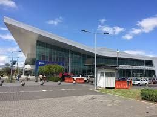

Lugares turisticos del Ecuador
Plaza grande
La plaza de la Independencia, también conocida como plaza Grande, es la principal plaza de la ciudad de Quito (Ecuador), ubicada en el casco antiguo de la ciudad. Se trata de la plaza mayor de la capital, centro político e histórico del Ecuador, y asiento simbólico del presidente del Ecuador. Es el punto referencial de la altura de la ciudad, ubicada a 2818 m s. n. m. Su característica principal es el Monumento a la Independencia (Quito)
- Localizacion Geografica
- Coordillera - Andes
- Cordenadas - 0°13′16″S 78°30′40″O
- Altitud - 200m
- Datos Generales
- Tipo - Cultural
- Criterio -i- ii

Panecillo
La Majestuosa Virgen de Quito, está compuesta por siete mil cuatrocientas piezas, numeradas cada una de ellas, por lo cual se la pudo unir como un rompecabezas; esta es la mayor representación de aluminio en todo el mundo
Localizacion Geografica
- Coordillera - Andes
- Cordenadas - 0°13′16″S 78°30′40″O
- Altitud - 200m

Parque Bicentenario
El Parque Bicentenario se inauguró en 2013 Este es un texto con énfasis importante para destacartras el traslado del aeropuerto Mariscal Sucre a Tababela. La pista de aviación, que ocupaba la llanura del norte de Quito desde los años 30 y las instalaciones aeroportuarias, que incluían el edificio original de los años 60, mangas de desembarco, hangares, bodegas e instalaciones de combustible debían convertirse en un nuevo parque central.
